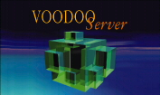

by Richard
Wesley
Electric Fish, Inc.
This is a summary of all of the version control systems available for the Macintosh that I am aware of. Each system is described in its own section along with my own impressions of the system. Links are provided to the vendor pages (if any) and if you have your own opinion, I would be happy to hear your comments or point to your review. Just email me with the information.
The contents of the reviews are mostly based on my own experience. I have used all but two of these systems (VOODOO and VSS) professionally on more than one project. The reviews of these last two are based on trial downloads, technical articles, review of online materials and personal communications from users. My goal with this page is to provide a convenient stepping off point for developers researching Macintosh-based systems.
Electric Fish sells two shareware VCS plugins for CodeWarrior. It is not our core business (2% of annual sales) and we are much more interested in promoting widespread use of version control in the Macintosh development community than making money. But we thought you should know.
Also known as CVS. CVS is the GNU version control system. The source is freely available and has been ported to just about every OS you can think of. The source and all associated resources are maintained by a company called Cyclic. CVS is quite robust as it is open source. There are several Macintosh clients, only one of which is based on the cross-platform GNU source. The others, while open-source, are home grown.
From the Macintosh perspective, CVS is a TCP based client-server system, and databases (repositories) are kept on a POSIX style server and are maintained over TCP connections. CVS supports kerberos making it useful for development over the internet. The system uses a copy/modify/merge paradigm, which means that several users can work on a file at the same time, changes being merged back into the repository. Conflicts are detected at commit time and must be resolved before the commit will succeed.
Data integrity appears to be quite good, especially in client-server mode, although I have seen one or two reports of occasional RCS archive corruption. CVS is used successfully to manage extremely large projects such as the BSD source, whose repository tracks over 100,000 files taking over 1GB of storage. If you are good with shell scripts you can configure CVS to do all sorts of fun things, including running source files through a formatter before checkin and automated change notification.
The biggest drawback of CVS is that its design is a bit long in the tooth and the source looks a bit like central Asia (i.e. centuries of invaders rampaging across it). It is also not so hot at maintaining complex versioning information, such as "product A, version X contains label P of module M, label Q of module N...".
CVS is well suited for cross-platform development projects with small budgets or limited configuration or administration needs. Academic projects, in-house development or net-based collaborations should consider using it.
Return to the index.
RCS an old single-file version control system for POSIX-style systems. There is an RCS plugin available for CodeWarrior if you need it. RCS has essentailly been superceded by CVS.
Organizations that are still using RCS.
Return to the index.
Perforce is a commercial version control system made by Perforce Inc. It has been ported to many operating systems, including the Macintosh. Perforce is a commercial product, but the free demo version is a two-workspace license.
Perforce is a TCP based client/server system and databases (depots) are kept on a POSIX style server and user workspaces are maintained over a TCP connection. Perforce has a multiple checkout scheme, so that while you must check out a file from the system, there are no exclusive locks and conflicts must be resolved at commit time. Perforce has a number of nice features, including atomic commits (i.e. all files in a checkin set are committed as a single unit), bug tracking and a really baroque scheme for mapping the depot layout to the workspace layout. It is also insanely fast and due to its use of a real database engine with two-stage commits, it is probably the safest of the available systems if the server is run on a reliable file system.
Perforce has been ported to a large number of OSes, (only CVS is available on more platforms). In fact, the Perforce server has been ported to Rhapsody DR2, which means that you can use it on all Apple hardware if you like.
The biggest liability of Perforce is that the server maintains the state of the client's workspace. This means that you have no control over your local work area, and if something goes wrong, it can be a bit of a chore to clean it up. From a Macintosh point of view the scheme for storing resource forks as separate files on the server is also somewhat weak and there is no nice GUI front end for it.
Perforce is a good choice for large scale commercial development, especially cross-platform development. Because the demo version is free, it is also an interesting choice for 1-2 developer cross platform projects.
Return to the index.
Projector is the system that is built into Apple's Macintosh Programmer's Workbench. It has been around for a long time and is quite solid for a file based system. Now that Apple is giving away MPW, it is also free. The database specification is also published if you want to write your own parser.
Projector is a Macintosh only system and the databases are kept on the Macintosh file system, usually on a file server. The databases can be manipulated either with commands in the MPW shell or from a standalone AppleEvent server called SourceServer. The system uses an exclusive locking mechanism, meaning that only one person can be working on a file at a time. Branching, labeling and report generation are all fairly well supported, although you may have some scripting to do. As a file based system, it is also theoretically vulnerable to database corruption, although this appears anecdotally to be quite rare.
Projector's major drawback is that it is not very fast for certain operations. It is also Macintosh only, which may be a problem for certain kinds of projects.
Projector is ideal for Macintosh-only projects with small budgets or limited needs. College students, small development houses and hobbyists should all consider using it.
Return to the index.
PVCS is a commercial cross-platform version control system based on the POSIX RCS system. It has been ported to the Macintosh by Synergex. PVCS is used by many large organizations.
PVCS is a file based system. This means that it can be used as a Macintosh only system, or with a mounted file system from another (non-Macintosh) machine. PVCS works only on single files - there is no global (project) information maintained by the system. It also has a highly configurable mapping between archive files and the local workspace.
PVCS's main strength is it's ability to track complex configurations. As an end user, this is often a pain to use, but integration departments like it - which is a good thing as it takes one to maintain the mappings.
As a file based system, PVCS is also vulnerable to hardware induced data corruption, although due to the architecture, this tends to happen on a file-by-file basis rather than globally. Still, archives I have received that were produced by PVCS have been "dirty" - garbage characters and inconsistent line endings. I really don't see what it offers over more robust systems like Perforce.
PVCS can work for large organizations with complex configuration needs that already have a commitment to the system on other platforms.
Return to the index.
Visual SourceSafe (VSS) is a commercial cross-platform system from Microsoft. The Macintosh version is maintained and distributed by Metrowerks. I have not used VSS, nor have I encountered anyone who recommends it.
VSS is a file-based system, with the source maintained on a server, usually Windows NT, but it can be hosted on a Macintosh file server. It provides all the usual source control operations and supports concurrent development (i.e. several users can check a file out and work on it simultaneously). The Macintosh version has a nice looking client and the CodeWarrior integration is excellent as Metrowerks is the client vendor. VSS provides a rich set of configuration management tools. One can link variants of projects together, so that project A can include a particular variant of project B. Access control is quite complete as well.
As a file-based system, VSS is susceptible to data corruption caused by client and hardware bugs. With VSS, this appears to be a serious problem as the archives reportedly can get corrupted quite regularly. The only recovery tool (which reportedly does not always work) must be run under Windows, which is a serious liability for Macintosh only development. Data corruption seems to not be so much of an issue with smaller databases, but this begs the question of why use such a complex and expensive tool for a small project.
For a while there were announcements and postings from Metrowerks that VSS for Macintosh would not be upgraded to version 6.0 because of code base porting issues. It now appears that Microsoft and Metrowerks have come to an agreement that will allow VSS for Macintosh to continue to work with version 6 databases. This is good news as it prevents VSS for Macintosh from becoming an orphaned system.
Organizations that have committed to VSS on other platforms and need Macintosh compatibility.
Return to the index.

VOODOO and VOODOO Server are two commercial Macintosh-only version control systems made by UNI SOFTWARE PLUS. The name "VOODOO" is an acronym for "Versions Of Outdated Documents Organized Orthogonally." While I have not used VOODOO (except the server demo), I have read about it and it is very highly thought of. It is the cheapest of the commercial systems listed here.
VOODOO is a Macintosh only system and the database is stored using the Macintosh file system. This means no special hardware (e.g. a Linux box) needs to be bought and maintained. VOODOO uses exclusive locking of files to prevent update conflicts and has access controls to prevent unauthorized manipulation. Its delta storage system reportedly produces very compact archives, even for binary data, which makes it useful for managing non-text documents and images. It also supports AppleScript which can be useful for project management.
VOODOO's big strength is in the management of project-level variants. It defines a simple way of tracking different variants of a project (e.g. prerelease, OEM, or multi-platform). Other systems require a superstructure for mapping the version number of a file to a particular project variant, which can be quite complex and unwieldy. The documentation is quite thorough and there is even a pointer to the chief architect's ACM paper describing this theory behind the system.
Until recently, VOODOO was a file based system, but with the release of VOODOO Server they have moved to a more modern and robust client-server architecture. The advantage of a client-server architecture is that all database transfers are bottlenecked, sequenced and can be committed robustly. VOODOO Server uses a two-stage commit process on top of the Macintosh file system.The server communication protocol is based on AppleEvents.
At the moment, the only client for the VOODOO Server is the CodeWarrior plugin that comes with the product. This means that users who wish to manage non-development projects (or even non-CodeWarrior development projects) must continue to use the previous VOODOO release. Uni intends to create more clients for VOODOO Server in the coming months.
VOODOO's main weakness is that it solves a problem that may not require such a complete solution, and the fact that it is Macintosh only system makes its model for supporting multi-platform development less useful than it might be if it were a cross-platform system. VOODOO also does not support concurrent development which might make it less desirable for large teams.
The VOODOO products are a generally useful version control system that any Macintosh-only workgroup with the budget should consider using. I have also spoken with people who find it very effective for non-programming projects because its GUI is accessible to non-engineers and it can manage non-text documents effectively. CodeWarrior developers should probably use VOODOO Server for the more robust client-server architecture.
Return to the index.